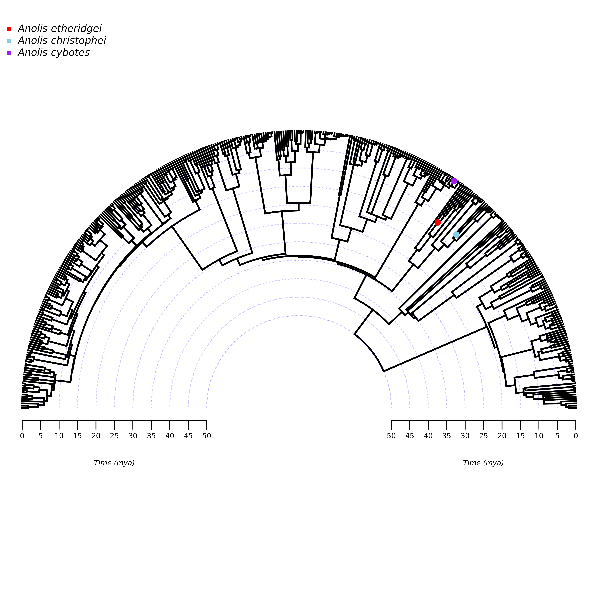
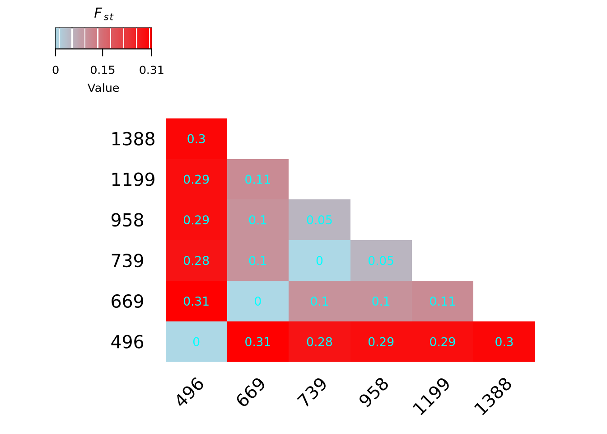
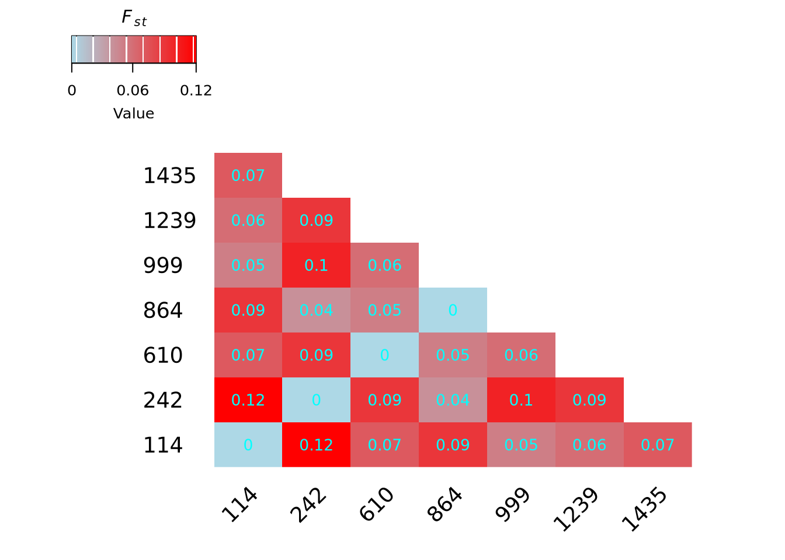
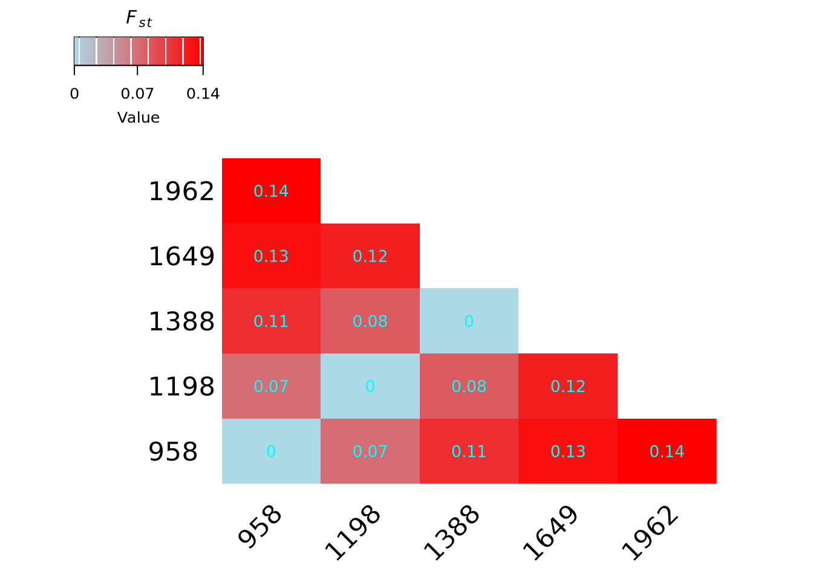
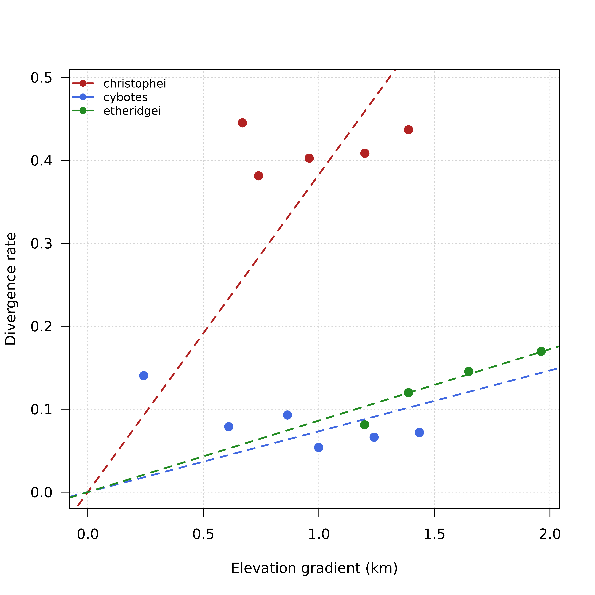
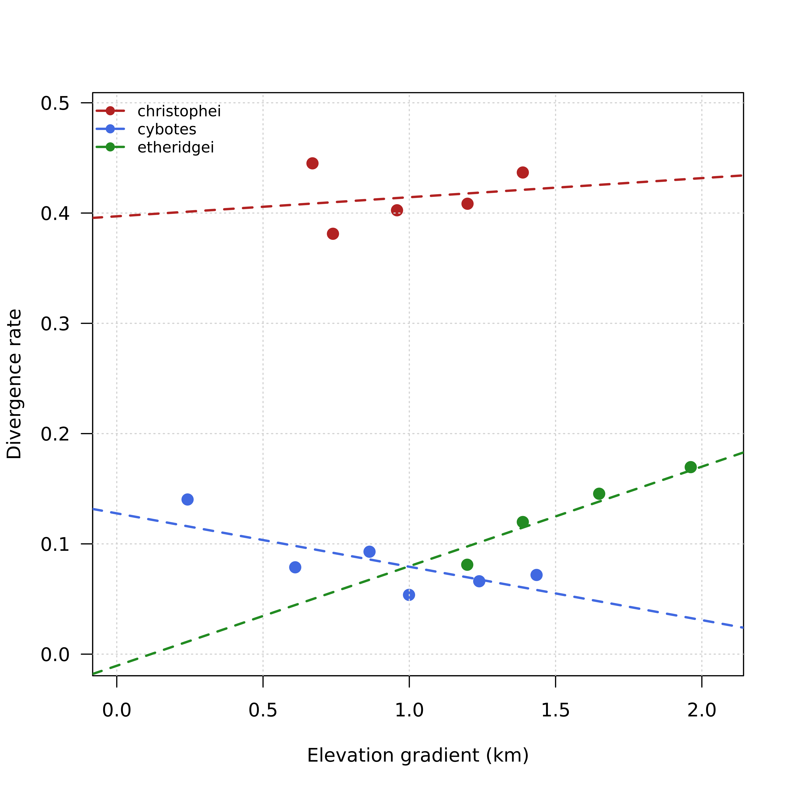

## ensure BiocManager is installed cleanly
if (!requireNamespace("BiocManager", quietly = TRUE)) {
# Define the temporary CRAN mirror just for this specific bootstrap step
install.packages("BiocManager", repos = "https://r-project.org")
if (!requireNamespace("BiocManager", quietly = TRUE)) {
stop("Failed to install 'BiocManager'. Check your internet connection.")
}
}
## this forces R to search BOTH the Cloud CRAN and the Bioconductor servers for dependencies
all_repos <- BiocManager::repositories()
all_repos["CRAN"] <- "https://r-project.org"
options(repos = all_repos)
## define CRAN packages
cran_packages <- c(
"adegenet", "ade4", "ape", "car", "canadamaps", "data.table",
"dartRverse", "ecodist", "hierfstat", "LEA", "lfmm",
"maps", "mapplots", "mapproj", "rnaturalearth", "pegas",
"plotrix", "phytools","poppr", "qvalue", "sf",
"stringr", "vcfR", "xtable"
)
## define Bioconductor packages
bioc_packages <- c("SeqArray", "SeqVarTools", "SNPRelate")
## install missing CRAN packages
new_cran <- cran_packages[!(cran_packages %in% installed.packages()[,"Package"])]
if (length(new_cran)) {
install.packages(new_cran, dependencies = TRUE)
}
## install missing Bioconductor packages
new_bioc <- bioc_packages[!(bioc_packages %in% installed.packages()[,"Package"])]
if (length(new_bioc)) {
# BiocManager will now successfully resolve BiocGenerics, S4Vectors, and IRanges
BiocManager::install(new_bioc, update = FALSE, ask = FALSE, dependencies = TRUE)
}
## load all packages simultaneously
all_packages <- c(cran_packages, bioc_packages)
invisible(lapply(all_packages, library, character.only = TRUE))Lineage age and gene flow estimates
Library
library(adegenet)
library(ade4)
library(ape)
library(car)
library(data.table)
library(dartRverse)
library(ecodist)
library(gplots)
library(hierfstat)
library(LEA)
library(lfmm)
library(lme4)
library(maps)
library(mapplots)
library(mapproj)
library(pegas)
library(plotrix)
library(phytools)
library(poppr)
library(qvalue)
library(sf)
library(SeqArray)
library(SeqVarTools)
library(SNPRelate)
library(stringr)
library(vcfR)
library(xtable)lizard.tree <- read.tree("/nfs/roberts/project/pi_mmm289/dp996/anoles/data/DRFossilIncludedSortaDate200NoBraPum.dated.tre")
##anoles <- lizard.tree$tip[grep("Anolis", lizard.tree$tip)]
##anole.tree <- drop.tip(phy = lizard.tree,
## tip = lizard.tree$tip[!lizard.tree$tip %in% anoles])
anole.tree <- lizard.tree
arc_height <- 0.5
h <- max(nodeHeights(anole.tree))
labs <- seq(0, h, by = 5)
plotTree(anole.tree, type = "arc", ftype = "off", fsize = 0.3,
arc_height = 0.5, ylim = c(-0.1*h, 1.1*(1+arc_height)*h),
mar = c(5, 0, 1, 0))
draw.arc(0, 0, radius = h-labs[2:length(labs)]+0.5*h,
angle1 = , angle2 = pi, col = make.transparent("blue",0.2),
lty = "dotted")
axis(1, pos = -3.5, at = h-seq(0, h, by = 5)+0.5*h,
labels = seq(0, h, by = 5), cex.axis = 0.5, padj = -2.5)
axis(1, pos = -3.5, at = -h+seq(0, h, by = 5)-0.5*h,
labels = seq(0, h, by = 5), cex.axis = 0.5, padj = -2.5)
text(50, -15, "Time (mya)", font = 3, cex = 0.5)
text(-50, -15, "Time (mya)", font = 3, cex = 0.5)
etheridgei <- getMRCA(anole.tree, c(grep("etheridgei", anole.tree$tip),
grep("insolitus", anole.tree$tip)))
christophei <- getMRCA(anole.tree, c(grep("christophei", anole.tree$tip),
grep("eugenegrahami", anole.tree$tip)))
cybotes <- getMRCA(anole.tree, c(grep("haetianus", anole.tree$tip),
grep("australis", anole.tree$tip)))
age_christophei <- nodeheight(anole.tree, node = christophei)
age_cybotes <- nodeheight(anole.tree, node = cybotes)
age_etheridgei <- nodeheight(anole.tree, node = etheridgei)
nodelabels(node = etheridgei, pch = 16, col = "red", frame = "n")
nodelabels(node = christophei, pch = 16, col = "skyblue", frame = "n")
nodelabels(node = cybotes, pch = 16, col = "purple", frame = "n")
legend("topleft", legend = expression(italic("Anolis etheridgei"),
italic("Anolis christophei"),
italic("Anolis cybotes")),
pch = 16, col = c("red", "skyblue", "purple"), bty = "n", cex = 0.7)
########################### A. christophei ################################
## reading .vcf file and producing genind object
chr_vcf <- read.vcfR("/nfs/roberts/project/pi_mmm289/dp996/anoles/christophei/christophei_outfiles/christophei_filt.recode.vcf")
chr_genind <- vcfR2genind(chr_vcf)
chr_genind
## access coordinates from the vcfR object's fix slot
chr_genind@other$chromosome <- chr_vcf@fix[ , 1]
chr_genind@other$position <- chr_vcf@fix[ , 2]
chr_genind
## filtering out loci with > 2 allelles
n <- names(which(nAll(chr_genind) == 2))
chr_genind <- chr_genind[loc = n]
chr_genind
## print the number of multilocus genotypes
mlg(chr_genind)
isPoly(chr_genind) %>% summary
poly_loci_chr <- names(which(isPoly(chr_genind) == TRUE))
chr_genind <- chr_genind[loc = poly_loci_chr]
isPoly(chr_genind) %>% summary
## adding populations to the genind object
chr_meta <- read.csv("/nfs/roberts/project/pi_mmm289/dp996/anoles/data/Sampling_master.csv")
pops_tab <- chr_meta[chr_meta$Museum_ID %in% indNames(chr_genind), ]
head(cbind(indNames(chr_genind), pops_tab$Museum_ID, pops_tab$Elevation))
## saving metadata only for christophei
write.csv(pops_tab,
file = "/nfs/roberts/project/pi_mmm289/dp996/anoles/data/chr_metadata.csv",
row.names = FALSE)
## adding all of the populations to the genind object
chr_genind$pop <- as.factor(pops_tab$Elevation)
## adding the rest of the metadata
chr_genind@other <- pops_tab[c(4, 5, 6, 7, 11, 12, 13, 14, 20, 21)]
## saving genind object
save(chr_genind,
file = "/nfs/roberts/project/pi_mmm289/dp996/anoles/data/chr_genind.RData")
############################# A. etheridgei ###################################
## reading .vcf file and producing genind object
eth_vcf <- read.vcfR("/nfs/roberts/project/pi_mmm289/dp996/anoles/etheridgei/etheridgei_outfiles/etheridgei_filt.recode.vcf")
eth_genind <- vcfR2genind(eth_vcf)
eth_genind
## access coordinates from the vcfR object's fix slot
eth_genind@other$ethomosome <- eth_vcf@fix[ , 1]
eth_genind@other$position <- eth_vcf@fix[ , 2]
eth_genind
## filtering out loci with > 2 allelles
n <- names(which(nAll(eth_genind) == 2))
eth_genind <- eth_genind[loc = n]
eth_genind
## print the number of multilocus genotypes
mlg(eth_genind)
isPoly(eth_genind) %>% summary
poly_loci_eth <- names(which(isPoly(eth_genind) == TRUE))
eth_genind <- eth_genind[loc = poly_loci_eth]
isPoly(eth_genind) %>% summary
## adding populations to the genind object
eth_meta <- read.csv("/nfs/roberts/project/pi_mmm289/dp996/anoles/data/Sampling_master.csv")
pops_tab <- eth_meta[eth_meta$Museum_ID %in% indNames(eth_genind), ]
head(cbind(indNames(eth_genind), pops_tab$Museum_ID, pops_tab$Elevation))
## saving metadata only for etheridgei
write.csv(pops_tab, file = "/nfs/roberts/project/pi_mmm289/dp996/anoles/data/eth_metadata.csv", row.names = FALSE)
## adding all of the populations to the genind object
eth_genind$pop <- as.factor(pops_tab$Elevation)
## adding the rest of the metadata
eth_genind@other <- pops_tab[c(4, 5, 6, 7, 11, 12, 13, 14, 20, 21)]
## saving genind object
save(eth_genind,
file = "/nfs/roberts/project/pi_mmm289/dp996/anoles/data/eth_genind.RData")
############################# A. cybotes ##################################
## reading .vcf file and producing genind object
cyb_vcf <- read.vcfR("/nfs/roberts/project/pi_mmm289/dp996/anoles/cybotes/cybotes_outfiles/cybotes_filt.recode.vcf")
cyb_genind <- vcfR2genind(cyb_vcf)
cyb_genind
## access coordinates from the vcfR object's fix slot
cyb_genind@other$cybomosome <- cyb_vcf@fix[ , 1]
cyb_genind@other$position <- cyb_vcf@fix[ , 2]
cyb_genind
## filtering out loci with > 2 allelles
n <- names(which(nAll(cyb_genind) == 2))
cyb_genind <- cyb_genind[loc = n]
cyb_genind
## print the number of multilocus genotypes
mlg(cyb_genind)
isPoly(cyb_genind) %>% summary
poly_loci_cyb <- names(which(isPoly(cyb_genind) == TRUE))
cyb_genind <- cyb_genind[loc = poly_loci_cyb]
isPoly(cyb_genind) %>% summary
## adding populations to the genind object
cyb_meta <- read.csv("/nfs/roberts/project/pi_mmm289/dp996/anoles/data/Anolis_cybotes_master.csv", check.names = FALSE)
## cleaning names indNames in genind object
indNames(cyb_genind) <- gsub("Acyb_", "", indNames(cyb_genind))
indNames(cyb_genind) <- gsub("Ashr_", "", indNames(cyb_genind))
indNames(cyb_genind) <- gsub("_R1_", "", indNames(cyb_genind))
pops_tab <- cyb_meta[cyb_meta$ID %in% indNames(cyb_genind), ]
cyb_genind <- cyb_genind[indNames(cyb_genind) %in% pops_tab$ID, , drop = TRUE]
## filtering out loci with > 2 allelles
n <- names(which(nAll(cyb_genind) == 2))
cyb_genind <- cyb_genind[loc = n]
cyb_genind
## print the number of multilocus genotypes
mlg(cyb_genind)
isPoly(cyb_genind) %>% summary
poly_loci_cyb <- names(which(isPoly(cyb_genind) == TRUE))
cyb_genind <- cyb_genind[loc = poly_loci_cyb]
isPoly(cyb_genind) %>% summary
## sorting ind in the genind object
cyb_genind <- cyb_genind[pops_tab$ID, ]
## filtering out pop at 400 m as suggested by Raul
pops_tab <- pops_tab[pops_tab$elv_cat != 400, ]
cyb_genind <- cyb_genind[indNames(cyb_genind) %in% pops_tab$ID, , drop = TRUE]
cbind(indNames(cyb_genind), pops_tab$ID, pops_tab$Site, pops_tab$Elevation)
pops_tab$Elevation[is.na(pops_tab$Elevation)] <- 1443 ## it looks like they forgot to
## write the elevation down
names(pops_tab)[12] <- "Tb"
names(pops_tab)[13] <- "Ta"
names(pops_tab)[14] <- "Ts"
## saving metadata only for cybotes
write.csv(pops_tab,
file = "/nfs/roberts/project/pi_mmm289/dp996/anoles/data/cyb_metadata.csv",
row.names = FALSE)
## filtering out loci with > 2 allelles
n <- names(which(nAll(cyb_genind) == 2))
cyb_genind <- cyb_genind[loc = n]
cyb_genind
## print the number of multilocus genotypes
mlg(cyb_genind)
isPoly(cyb_genind) %>% summary
poly_loci_cyb <- names(which(isPoly(cyb_genind) == TRUE))
cyb_genind <- cyb_genind[loc = poly_loci_cyb]
isPoly(cyb_genind) %>% summary
## adding all of the populations to the genind object
cyb_genind$pop <- as.factor(pops_tab$Elevation)
## adding the rest of the metadata
cyb_genind@other <- pops_tab[c(6, 7, 8, 9, 12, 13, 14)]
## saving genind object
save(cyb_genind,
file = "/nfs/roberts/project/pi_mmm289/dp996/anoles/data/cyb_genind.RData")load("/nfs/roberts/project/pi_mmm289/dp996/anoles/data/chr_genind.RData")
load("/nfs/roberts/project/pi_mmm289/dp996/anoles/data/cyb_genind.RData")
load("/nfs/roberts/project/pi_mmm289/dp996/anoles/data/eth_genind.RData")
## Only keeping populations with at least 5 ind
########################## A. christophei #################################
summary(chr_genind$pop)
tail(cbind(indNames(chr_genind), chr_genind@other$Elevation), n = 40)
rm_ind <- "MMM01066" ## there is only one ind collected at 140 m
chr_genind <- chr_genind[!indNames(chr_genind) %in% rm_ind, ]
## I am going to merge populations collected at the same site
levels(chr_genind$pop)
levels(chr_genind$pop)[2] <- "669" ## merging samples from Jarabacoa
levels(chr_genind$pop)
levels(chr_genind$pop)[5] <- "1199" ## merging samples from Tireo Arriba
summary(chr_genind$pop)
save(chr_genind,
file = "/nfs/roberts/project/pi_mmm289/dp996/anoles/data/chr_genind_merged.RData")
######################### A. cybotes ####################################
summary(cyb_genind$pop)
obj <- data.frame(ind_genind = indNames(cyb_genind), location = cyb_genind@other$Site)
head(obj)
tapply(obj$ind_genind, obj$location, length)
rm_pop <- c("Casetta Valle Nuevo", "Constanza to Valle Nuevo")
obj <- obj[!obj$location %in% rm_pop, ]
cyb_genind <- cyb_genind[indNames(cyb_genind) %in% obj$ind_genind, ]
tapply(obj$ind_genind, obj$location, length)
obj$location <- as.factor(obj$location)
levels(obj$location)
levels(obj$location) <- c("242", "1239", "864", "1435", "999", "610", "114")
levels(obj$location)
cyb_genind$pop <- obj$location
summary(cyb_genind$pop)
save(cyb_genind,
file = "/nfs/roberts/project/pi_mmm289/dp996/anoles/data/cyb_genind_merged.RData")
############################ A. etheridgei ###############################
summary(eth_genind$pop)
levels(eth_genind$pop)[c(5, 6, 7, 8)] <- "1962" ## merging all samples from Valle Nuevo
save(eth_genind,
file = "/nfs/roberts/project/pi_mmm289/dp996/anoles/data/eth_genind_merged.RData")################### Computing Fst for A. christophei ########################
## Computing pairwise Fst test
##load("/nfs/roberts/project/pi_mmm289/dp996/anoles/data/chr_genind_merged.RData")
##load("/nfs/roberts/project/pi_mmm289/dp996/anoles/data/cyb_genind_merged.RData")
##load("/nfs/roberts/project/pi_mmm289/dp996/anoles/data/eth_genind_merged.RData")
##chr_fst <- genet.dist(chr_genind, method = "WC84") %>% round(digits = 3)
##save(chr_fst,
## file = "/nfs/roberts/project/pi_mmm289/dp996/anoles/data/chr_fst.RData")
load("/nfs/roberts/project/pi_mmm289/dp996/anoles/data/chr_fst.RData")
fst_chr <- as.matrix(chr_fst)
fst_chr[fst_chr < 0] <- 0
fst_chr <- fst_chr[rev(seq_len(nrow(fst_chr))), , drop = FALSE]
get_lower_tri<-function(cor_matrix){
cor_matrix[upper.tri(cor_matrix)] <- NA
return(cor_matrix)
}
lower_tri_matrix <- get_lower_tri(round(fst_chr, 2))
my_palette <- colorRampPalette(c("lightblue", "red"))(n = 100)
heatmap.2(lower_tri_matrix,
cellnote = lower_tri_matrix,
trace = "none",
na.color = "white",
dendrogram = "none",
Rowv = FALSE,
Colv = FALSE,
col = my_palette,
key = TRUE,
offsetRow = -30,
key.title = expression(italic(F[st])),
density.info = "none", srtCol = 45,
adjCol = c(1, 1), key.par = list(cex = 0.8),
key.xtickfun = function() {
# grab the generated breaks from the heatmap environment
breaks <- parent.frame()$breaks
# extract specific values you want to show (e.g., Min, Mid, Max)
idx <- c(1, round(length(breaks)/2), length(breaks))
# heatmap.2 relies on an internal scale01 function to position elements
return(list(
at = parent.frame()$scale01(breaks[idx]),
labels = round(breaks[idx], 2)
))
})
################### Computing Fst for A. cybotes ########################
##cyb_fst <- genet.dist(cyb_genind, method = "WC84") %>% round(digits = 3)
##save(cyb_fst,
## file = "/nfs/roberts/project/pi_mmm289/dp996/anoles/data/cyb_fst.RData")
load("/nfs/roberts/project/pi_mmm289/dp996/anoles/data/cyb_fst.RData")
fst_cyb <- as.matrix(cyb_fst)
fst_cyb[fst_cyb < 0] <- 0
colnames(fst_cyb) <- c("114", "242", "610", "864", "999", "1239", "1435")
rownames(fst_cyb) <- c("114", "242", "610", "864", "999", "1239", "1435")
fst_cyb <- fst_cyb[rev(seq_len(nrow(fst_cyb))), , drop = FALSE]
get_lower_tri<-function(cor_matrix){
cor_matrix[upper.tri(cor_matrix)] <- NA
return(cor_matrix)
}
lower_tri_matrix <- get_lower_tri(round(fst_cyb, 2))
heatmap.2(lower_tri_matrix,
cellnote = lower_tri_matrix,
trace = "none",
na.color = "white",
dendrogram = "none",
Rowv = FALSE,
Colv = FALSE,
col = my_palette,
key = TRUE,
offsetRow = -30,
key.title = expression(italic(F[st])),
density.info = "none", srtCol = 45,
adjCol = c(1, 1), key.par = list(cex = 0.8),
key.xtickfun = function() {
# grab the generated breaks from the heatmap environment
breaks <- parent.frame()$breaks
# extract specific values you want to show (e.g., Min, Mid, Max)
idx <- c(1, round(length(breaks)/2), length(breaks))
# heatmap.2 relies on an internal scale01 function to position elements
return(list(
at = parent.frame()$scale01(breaks[idx]),
labels = round(breaks[idx], 2)
))
})
################### Computing Fst for A. etheridgei ########################
##eth_fst <- genet.dist(eth_genind, method = "WC84") %>% round(digits = 3)
##save(eth_fst,
## file = "/nfs/roberts/project/pi_mmm289/dp996/anoles/data/eth_fst.RData")
load("/nfs/roberts/project/pi_mmm289/dp996/anoles/data/eth_fst.RData")
fst_eth <- as.matrix(eth_fst)
fst_eth[fst_eth < 0] <- 0
fst_eth <- fst_eth[rev(seq_len(nrow(fst_eth))), , drop = FALSE]
get_lower_tri<-function(cor_matrix){
cor_matrix[upper.tri(cor_matrix)] <- NA
return(cor_matrix)
}
lower_tri_matrix <- get_lower_tri(round(fst_eth, 2))
heatmap.2(lower_tri_matrix,
cellnote = lower_tri_matrix,
trace = "none",
na.color = "white",
dendrogram = "none",
Rowv = FALSE,
Colv = FALSE,
col = my_palette,
key = TRUE,
offsetRow = -30,
key.title = expression(italic(F[st])),
density.info = "none", srtCol = 45,
adjCol = c(1, 1), key.par = list(cex = 0.8),
key.xtickfun = function() {
# grab the generated breaks from the heatmap environment
breaks <- parent.frame()$breaks
# extract specific values you want to show (e.g., Min, Mid, Max)
idx <- c(1, round(length(breaks)/2), length(breaks))
# heatmap.2 relies on an internal scale01 function to position elements
return(list(
at = parent.frame()$scale01(breaks[idx]),
labels = round(breaks[idx], 2)
))
})
######################### A. christophei ##########################
load("/nfs/roberts/project/pi_mmm289/dp996/anoles/data/chr_fst.RData")
chr_fst <- as.matrix(chr_fst)
# Calculate Slatkin's linearized Fst and Reynolds' Distance
slatkin_chr <- data.frame()
slatkin_chr <- chr_fst/(1 - chr_fst)
reynolds_chr <- data.frame()
reynolds_chr <- -log(1 - chr_fst)
# Rate of divergence per unit of time (using Reynolds' Distance)
rate_reynolds_chr <- reynolds_chr/12
# Rate of divergence per unit of time (using Slatkin's Fst)
rate_slatkin_chr <- slatkin_chr/12
y_chr <- slatkin_chr[ , 1]
x_chr <- colnames(slatkin_chr)
chr_tab <- data.frame(rate = y_chr, elevation = x_chr,
species = rep("christophei", length(y_chr)))
####################### A. cybotes ###############################
load("/nfs/roberts/project/pi_mmm289/dp996/anoles/data/chr_fst.RData")
cyb_fst <- as.matrix(cyb_fst)
colnames(cyb_fst) <- c("114", "242", "610", "864", "999", "1239", "1435")
rownames(cyb_fst) <- c("114", "242", "610", "864", "999", "1239", "1435")
# Calculate Slatkin's linearized Fst and Reynolds' Distance
slatkin_cyb <- data.frame()
slatkin_cyb <- cyb_fst/(1 - cyb_fst)
reynolds_cyb <- data.frame()
reynolds_cyb <- -log(1 - cyb_fst)
# Rate of divergence per unit of time (using Reynolds' Distance)
rate_reynolds_cyb <- reynolds_cyb/1
# Rate of divergence per unit of time (using Slatkin's Fst)
rate_slatkin_cyb <- slatkin_cyb/1
y_cyb <- slatkin_cyb[ , 1]
x_cyb <- colnames(slatkin_cyb)
cyb_tab <- data.frame(rate = y_cyb, elevation = x_cyb,
species = rep("cybotes", length(y_cyb)))
####################### A. etheridgei ###############################
load("/nfs/roberts/project/pi_mmm289/dp996/anoles/data/chr_fst.RData")
eth_fst <- as.matrix(eth_fst)
# Calculate Slatkin's linearized Fst and Reynolds' Distance
slatkin_eth <- data.frame()
slatkin_eth <- eth_fst/(1 - eth_fst)
reynolds_eth <- data.frame()
reynolds_eth <- -log(1 - eth_fst)
# Rate of divergence per unit of time (using Reynolds' Distance)
rate_reynolds_eth <- reynolds_eth/13
# Rate of divergence per unit of time (using Slatkin's Fst)
rate_slatkin_eth <- slatkin_eth/13
y_eth <- slatkin_eth[ , 1]
x_eth <- colnames(slatkin_eth)
eth_tab <- data.frame(rate = y_eth, elevation = x_eth,
species = rep("etheridgei", length(y_eth)))
anole_gen_div <- rbind(chr_tab, cyb_tab, eth_tab)
##write.csv(anole_gen_div,
## file = "/nfs/roberts/project/pi_mmm289/dp996/anoles/data/anole_genetic_divergence.csv",
## row.names = FALSE)
## forcing the intercept to zero assumes that two populations
## at the exact same elevation have zero genetic differentiation ($F_{ST} = 0$)
anole_gen_div2 <- anole_gen_div[anole_gen_div$rate > 0, ]
anole_gen_div2$elevation <- as.numeric(anole_gen_div2$elevation)/1000
model1 <- lmer(rate ~ 0 + elevation + (0 + elevation | species), data = anole_gen_div2)
summary(model1)Linear mixed model fit by REML ['lmerMod']
Formula: rate ~ 0 + elevation + (0 + elevation | species)
Data: anole_gen_div2
REML criterion at convergence: -20.8
Scaled residuals:
Min 1Q Median 3Q Max
-1.17844 -0.29138 0.00737 0.43441 2.35253
Random effects:
Groups Name Variance Std.Dev.
species elevation 0.031643 0.17789
Residual 0.006451 0.08032
Number of obs: 15, groups: species, 3
Fixed effects:
Estimate Std. Error t value
elevation 0.1808 0.1043 1.733## model with random intercept and slope
model2 <- lmer(rate ~ elevation + (elevation | species),
data = anole_gen_div2)
summary(model2)Linear mixed model fit by REML ['lmerMod']
Formula: rate ~ elevation + (elevation | species)
Data: anole_gen_div2
REML criterion at convergence: -42.9
Scaled residuals:
Min 1Q Median 3Q Max
-1.2601 -0.6089 0.1309 0.4559 1.6048
Random effects:
Groups Name Variance Std.Dev. Corr
species (Intercept) 0.0445904 0.21116
elevation 0.0057763 0.07600 -0.40
Residual 0.0005161 0.02272
Number of obs: 15, groups: species, 3
Fixed effects:
Estimate Std. Error t value
(Intercept) 0.17139 0.12444 1.377
elevation 0.01974 0.04801 0.411
Correlation of Fixed Effects:
(Intr)
elevation -0.433## linear fixed effects models
model3 <- lm(rate ~ elevation*species, data = anole_gen_div2)
summary(model3)
Call:
lm(formula = rate ~ elevation * species, data = anole_gen_div2)
Residuals:
Min 1Q Median 3Q Max
-0.029151 -0.010877 0.001024 0.011866 0.035957
Coefficients:
Estimate Std. Error t value Pr(>|t|)
(Intercept) 0.39731 0.03834 10.362 2.66e-06 ***
elevation 0.01767 0.03733 0.473 0.647255
speciescybotes -0.26371 0.04475 -5.893 0.000231 ***
speciesetheridgei -0.44082 0.07310 -6.030 0.000195 ***
elevation:speciescybotes -0.07298 0.04412 -1.654 0.132537
elevation:speciesetheridgei 0.09368 0.05435 1.724 0.118859
---
Signif. codes: 0 '***' 0.001 '**' 0.01 '*' 0.05 '.' 0.1 ' ' 1
Residual standard error: 0.02268 on 9 degrees of freedom
Multiple R-squared: 0.9865, Adjusted R-squared: 0.979
F-statistic: 131.5 on 5 and 9 DF, p-value: 3.932e-08## setup species factors and distinct colors
anole_gen_div2$species_fac <- as.factor(anole_gen_div2$species)
species_levels <- levels(anole_gen_div2$species_fac)
plot_colors <- c("firebrick", "royalblue", "forestgreen")
species_cols <- plot_colors[as.numeric(anole_gen_div2$species_fac)]
## scatter plot of raw data points
plot(
anole_gen_div2$elevation, anole_gen_div2$rate,
col = species_cols,
type = "n",
pch = 19,
cex = 1.3,
xlab = "",
ylab = "",
axes = FALSE,
xaxt = "n",
xlim = c(0, max(anole_gen_div2$elevation, na.rm = TRUE)),
ylim = c(0, max(anole_gen_div2$rate, na.rm = TRUE) * 1.1),
las = 1
)
grid()
par(new = TRUE)
plot(
anole_gen_div2$elevation, anole_gen_div2$rate,
col = species_cols,
pch = 19,
cex = 1.3,
xlab = "Elevation gradient (km)",
ylab = "Divergence rate",
xlim = c(0, max(anole_gen_div2$elevation, na.rm = TRUE)),
ylim = c(0, max(anole_gen_div2$rate, na.rm = TRUE) * 1.1),
las = 1
)
## add species-specific random slopes (forcing through origin 0,0)
sp_slopes <- coef(model1)$species[, "elevation"]
for (i in seq_along(species_levels)) {
# Draw species-specific line with a zero intercept
abline(a = 0, b = sp_slopes[i], col = plot_colors[i], lwd = 2, lty = 2)
}
## add the fixed-effect average slope (thick dashed black line)
fixed_slope <- fixef(model1)["elevation"]
##abline(a = 0, b = fixed_slope, col = "black", lwd = 3, lty = 1)
legend(
"topleft",
legend = species_levels,
col = plot_colors,
pch = c(19, 19, 19),
lty = c(2, 2, 2),
lwd = c(2, 2, 2),
bty = "n",
cex = 0.8
)
## setup species factors and distinct colors
anole_gen_div2$species_fac <- as.factor(anole_gen_div2$species)
species_levels <- levels(anole_gen_div2$species_fac)
plot_colors <- c("firebrick", "royalblue", "forestgreen")
species_cols <- plot_colors[as.numeric(anole_gen_div2$species_fac)]
## scatter plot of raw data points
plot(
anole_gen_div2$elevation, anole_gen_div2$rate,
col = species_cols,
pch = 19,
cex = 1.3,
xlab = "Elevation gradient (km)",
ylab = "Divergence rate",
xlim = c(0, max(anole_gen_div2$elevation, na.rm = TRUE) * 1.05),
ylim = c(
min(0, min(anole_gen_div2$rate, na.rm = TRUE)),
max(anole_gen_div2$rate, na.rm = TRUE) * 1.1
), las = 1
)
grid()
par(new = TRUE)
plot(
anole_gen_div2$elevation, anole_gen_div2$rate,
col = species_cols,
pch = 19,
type = "n",
cex = 1.3,
xlab = "",
ylab = "",
xaxt = "n",
axes = FALSE,
xlim = c(0, max(anole_gen_div2$elevation, na.rm = TRUE) * 1.05),
ylim = c(
min(0, min(anole_gen_div2$rate, na.rm = TRUE)),
max(anole_gen_div2$rate, na.rm = TRUE) * 1.1
), las = 1
)
## extract species-specific random intercepts and slopes from the model
# (Replace 'model' with your fitted model object name if different)
sp_coefs <- coef(model2)$species
## plot each species regression line (dashed colored lines)
for (i in seq_along(species_levels)) {
sp_name <- species_levels[i]
sp_int <- sp_coefs[sp_name, "(Intercept)"]
sp_slope <- sp_coefs[sp_name, "elevation"]
abline(a = sp_int, b = sp_slope, col = plot_colors[i], lwd = 2, lty = 2)
}
## add the fixed-effect average population line (thick black line)
fixed_int <- fixef(model2)["(Intercept)"]
fixed_slope <- fixef(model2)["elevation"]
##abline(a = fixed_int, b = fixed_slope, col = "black", lwd = 3, lty = 1)
legend(
"topleft",
legend = species_levels,
col = plot_colors,
pch = c(19, 19, 19),
lty = c(2, 2, 2),
lwd = c(2, 2, 2),
bty = "n",
cex = 0.8
)